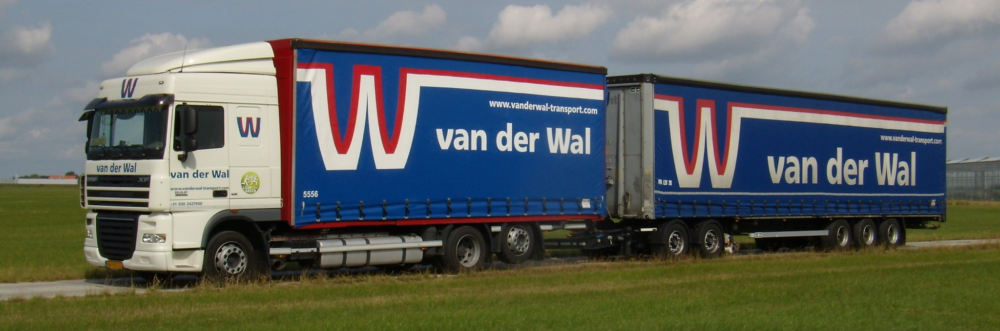
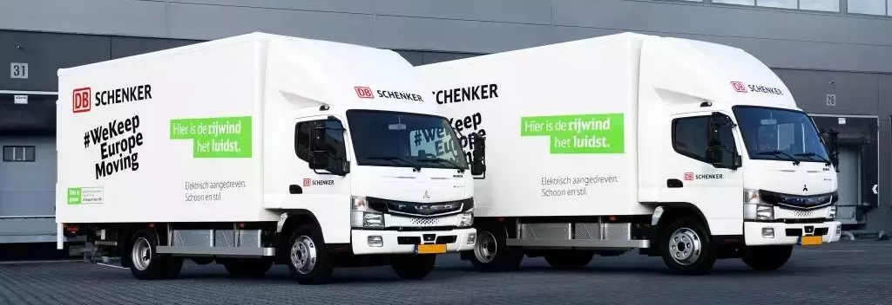

Environmental Impact of Long-Combination Vehicles in Full-Truckload Transport Planning
SSRN
How the use of long-combination vehicles affects the environmental impact of
full-truckload transport planning.
−13.04%emissions compared to current operations
+25.73%emissions if LCVs were disallowed, as under old legislation
- Long-combination vehicles
- Full-truckload transport
- Emissions
- Transport planning
C.H. Bazelmans, A.H. Schrotenboer, G. Laporte, T. Van Woensel

The Vehicle Routing Problem with Pickups, Deliveries, and Scheduled Linehauls
European Journal of Operational Research, 330(3), 995–1008
Coordinating multi-depot pickup-and-delivery routes with scheduled linehauls to consolidate freight, cutting costs and emissions.
~17.4%cost savings in an industry case study (24 days)
- Vehicle routing
- Pickup and delivery
- Scheduled linehauls
- Multi-depot
- Price-and-branch
- Adaptive large neighborhood search
- Freight consolidation
C.H. Bazelmans, S.L. ter Braake, A. Schrotenboer, R. van Lieshout, T. Van Woensel